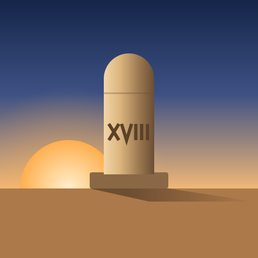

מיל
זמני היום ההלכתיים, מחושבים לפי המקום שבו אתה נמצא.
למה ”מיל“?
מיל הוא מידת המרחק ההלכתית: המרחק שאדם מהלך ברגל בשמונה־עשרה דקות. זו מידה שמודדת מרחק ביחידות של זמן — ובדיוק המפגש הזה הוא מה שהיישומון עושה.
המילה עצמה שאולה מלטינית, miliarium — אבן המיל הרומית שהוצבה בצידי הדרכים וסימנה את המרחק שנותר. אותה מילה נושאת אפוא את שתי המשמעויות: הזמן של שמונה־עשרה הדקות, והמרחק שמסמנת האבן.
שמונה־עשרה הדקות אינן מספר שרירותי: הן גם מניין ח״י, והן משמשות למשל כשיעור הנפוץ לצאת הכוכבים אחרי השקיעה. משום כך חקוקה על האייקון הספרה הרומית XVIII — והצל שהאבן מטילה הוא עצמו מד-הזמן, שעון שמש.
באנגלית היישומון נקרא Mil.
מה היישומון מחשב
ביסוד הכול עומדת השעה הזמנית: היום ההלכתי, מהזריחה עד השקיעה, מחולק לשתים־עשרה שעות שוות. בקיץ שעה כזו ארוכה משישים דקות, ובחורף קצרה מהן — ולכן זמני היום זזים לאורך השנה ומשתנים גם לפי קו הרוחב שבו אתה נמצא.
- עלות השחר, משיכיר, הזריחה והשקיעה
- סוף זמן קריאת שמע וסוף זמן תפילה
- חצות היום, מנחה גדולה ופלג המנחה
- צאת הכוכבים — שמונה־עשרה דקות אחרי השקיעה, ולצידו שיטת רבנו תם
- כיוון תפילה לאבן השתייה שבהר הבית, עם מצפן חי
- תאריך עברי בגימטריה לצד התאריך הלועזי
מתי מתחלף התאריך העברי: היום העברי מתחיל בערב, ולכן התאריך העברי וספירת העומר מתקדמים בצאת הכוכבים — ולא בחצות הלילה ולא כבר בשקיעה. בין השקיעה לצאת הכוכבים נמצא בין השמשות, שהוא ספק יום ספק לילה, ולכן היישומון ממתין לרגע שבו היום החדש התחיל לכל הדעות. התאריך הלועזי, לעומת זאת, מתחלף בחצות כרגיל.
החישובים נעשים במלואם בתוך הדפדפן שלך, בעזרת הספרייה SunCalc, שמוגשת מהשרת של היישומון עצמו. היישומון אינו מתחזק שרת חישוב, ואין אליו בסיס נתונים.
לתשומת לבך: הזמנים מוצגים לנוחות בלבד ועשויים להיות תלויים בשיטת חישוב ובמנהג. להכרעה הלכתית יש להסתמך על לוח מוסמך או על מורה הוראה.
פרטיות
אין חשבונות, אין הרשמה, אין עוגיות מעקב ואין אנליטיקס. היישומון אינו מחזיק עליך שום נתון בשרת.
המיקום
המיקום מגיע מהדפדפן — רק אחרי שאישרת זאת. אם לא ניתנה הרשאה, נעשה זיהוי גס לפי כתובת IP דרך ipapi.co, ואז המיקום מסומן בתגית ”משוער“. המיקום משמש לחישוב הזמנים בדפדפן ואינו נשלח לשום שרת שלנו — משום שאין שרת כזה.
שם היישוב
כדי להציג את שם המקום, הקואורדינטות נשלחות לשירות Nominatim (OpenStreetMap), ובנפילה ל־BigDataCloud. לפני השליחה הן מעוגלות לשלוש ספרות אחרי הנקודה — דיוק של כ-100 מטר, שמספיק לשם היישוב אך אינו מצביע על כתובת. התוצאה נשמרת במטמון מקומי לשבוע, כדי לצמצם את מספר הפניות.
מה נשמר במכשיר
בזיכרון המקומי של הדפדפן (localStorage) נשמרים רק העדפת הערכה (בהיר/כהה) ומטמון שמות היישובים. הכול נשאר במכשיר שלך, ונמחק כשמנקים את נתוני האתר בדפדפן.
מדידת תנועה
לא מותקן Google Analytics ולא כל SDK אחר למעקב. מספר הכניסות נצפה דרך המדדים המובנים של Firebase Hosting, המחושבים בצד השרת מתוך לוגים של בקשות — ולכן אין עוגיות ואין מזהה משתמש.
ללא צד שלישי
אין גופנים חיצוניים ואין ספריות מ־CDN: הכול מוגש מהשרת של היישומון, כך שלא דולפות כתובות IP של משתמשים לצדדים שלישיים. מדיניות Content-Security-Policy הדוקה מגבילה את התקשורת לשלושת שירותי המיקום שנזכרו כאן בלבד.
קוד ורישיון
היישומון עובד גם ללא חיבור לאינטרנט וניתן להתקנה למסך הבית (PWA). הוא בנוי ב־ HTML, CSS ו־JavaScript בלבד, ללא מסגרת עבודה חיצונית.
חישובי השמש נעשים בעזרת SunCalc 1.9.0 (רישיון MIT).